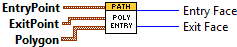

ArgosLib.lvlib:FindLinePolygonIntersectionFaces.vi
Connector Pane

Front Panel
Controls and Indicators
EntryPoint
X
Y
ExitPoint
X
Y
Polygon
2DPoint
X
Y
Entry Face
Exit Face
ClosestEntryDist
ClosestExitDist
Block Diagram
List of SubVIs and Express VIs with Configuration Information
VI Revision History
"ArgosLib.lvlib:FindLinePolygonIntersectionFaces.vi History"
Current Revision: 9
Position in Hierarchy
Iconified Cluster Constants